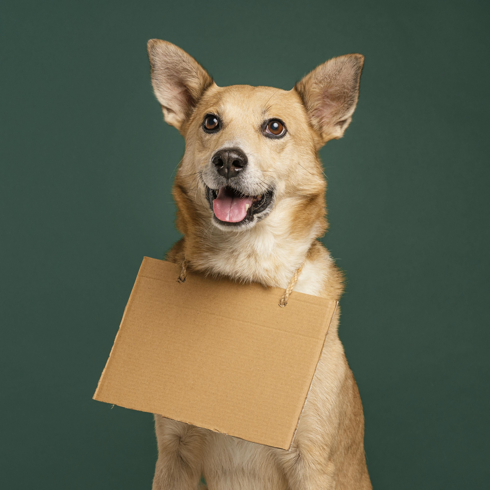
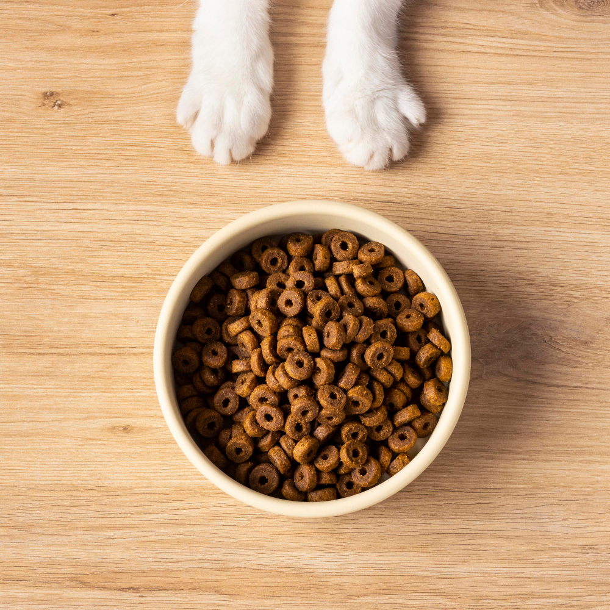

Galeria de perritos.





Beneficios de tener un perro
Los estudios demuestran que los propietarios de un perro tienen la tensión arterial y el colesterol más bajos que las personas que no conviven con un perro; además, tienen menos probabilidad de padecer problemas leves o graves de salud.

Entendiendo la nutrición de tu cachorro
Tu cachorro necesitará la cantidad adecuada de nutrientes para convertirse en un adulto sano. Aquí hay algunos pasos simples para ayudar a mantener saludable a tu cachorro:
- Pesa a tu cachorro regularmente
- Aliméntalo basado en la guía de alimentación que se encuentra en el empaque del alimento para mascotas y recomendaciones veterinarias
- Ajusta la cantidad de alimento a medida que tu cachorro crece